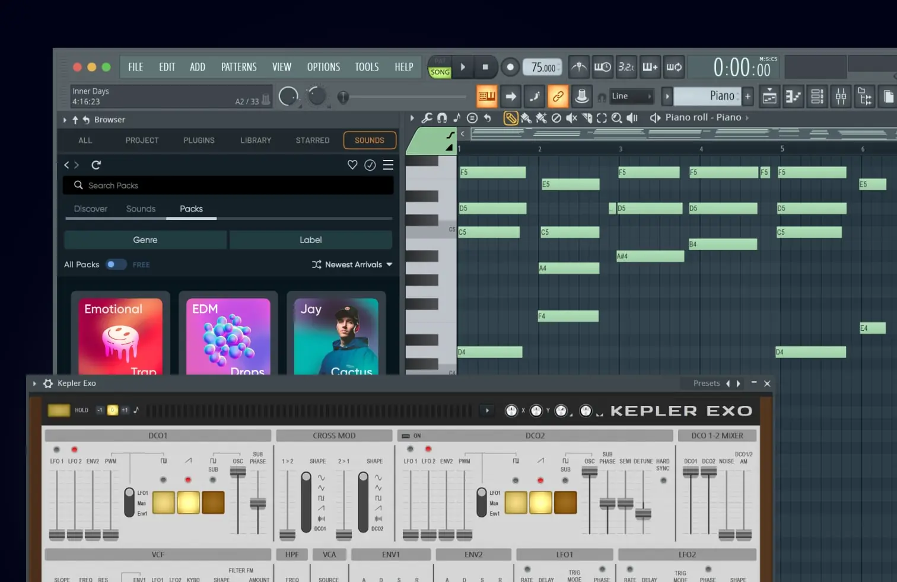

Beatmaking
Construa ritmos e variações rapidamente com uma abordagem visual.
DAW · beats · composição
Um ambiente visual para capturar ideias, construir beats, organizar arranjos e levar sua música até a mix final.
Pagamento único. Link e instruções no e-mail da compra em até 4 horas. Confirme a modalidade de ativação antes de pagar.

Ideias em movimento
Um fluxo conhecido por transformar padrões, melodias e automações em arranjos completos com rapidez.
Os requisitos e a forma de ativação podem variar por edição. O suporte pode confirmar esses pontos antes do pagamento.
Para produzir mais
Construa ritmos e variações rapidamente com uma abordagem visual.
Combine padrões, áudio e automações para dar forma à música.
Organize canais, efeitos e roteamentos dentro do mesmo projeto.
Dúvidas do produto
A edição apresentada é a 2026. Confirme a modalidade de licença e ativação com o suporte antes do pagamento.
O link e as instruções correspondentes chegam ao e-mail usado na compra em até 4 horas após a confirmação do pagamento.
O FL Studio possui versões para ambos, mas requisitos e compatibilidade variam. Confirme a versão do seu sistema antes da compra.
Sim. Envie sua dúvida e os dados do computador pela página de suporte.